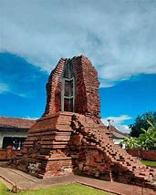

Candi Tikus
Candi Tikus is an archaeological site located in Trowulan, Mojokerto Regency, East Java, Indonesia. It is a Hindu temple was discovered in 1914. The name "Candi Tikus" means "Rat Temple" in Indonesian, which is derived from the fact that the site was once inhabited by rats. The temple measures approximately 29.5 meters by 28.25 meters. It is believed to have been built between the 13th and 14th centuries. The purpose of Candi Tikus is still debated among historians and archaeologists. Some experts believe that it was a bathing place for the royal family, while others suggest that it served as a water reservoir for the local community. The site was fully excavated and restored between 1984 and 1985. Candi Tikus is located about 13 kilometers southeast of Mojokerto city. To reach the temple, you can take the Mojokerto-Jombang road and turn east at the Trowulan intersection. It is situated approximately 600 meters from Candi Bajangratu. The temple offers a beautiful view and is a popular destination for tourists.